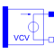

E_VCV_POLYPolynomial voltage controlled voltage source, like SPICE2 |

|
Information
This information is part of the Modelica Standard Library maintained by the Modelica Association.
The polynomial source is a SPICE2 model, which is also known in other SPICE derivatives.
Nonlinear voltage controlled voltage source. The "right" port voltage between pin p2 and n2 (=p2.v - n2.v) is controlled by the "left" port vector of voltages at the pin vector pc[:] via
p2.v - n2.v = f(pc[1].v - pc[2].v, pc[3].v - pc[4].v,...)
The controlling port (left) current vector is zero.
f is a polynomial in N variables s1...sN of the following form with M+1 coefficients a0, a1, a2,...aM.
f = a0 +
a1s1 + a2s2 + ... + aNsN +
a(N+1)s1² + a(N+2)s1s2 + ... + a(.)s1sN +
a(.)s2² + a(.)s2s3 + ... + a(.)s2sN +
a(.)s3² + s3s4 + ... + a(.)s4sN +
... +
a(.)sN² +
a(.)s1³ + a(.)s1²s2 + a(.)s1²s3 + ... + a(.)s1²sN +
a(.)s1s2² + a(.)s1s2s3 + ... + a(.)s1s2sN +
... +
a(.)sN³ + ...
The Coefficients a(.) are counted in this order. Reaching M, the particular sum is canceled.
In connection with the VCV, s1...sN are the voltages of the controlling side: s1=pc[1].v - pc[2].v, s2=pc[3].v - pc[4].v, s3=...
The corresponding SPICE description of the VCV polynomial source is the following:
Ename A1 A2 POLY(N) E11 E21 ... E1N E2N P0 P1...
where Ename is the name of the instance, A1 and A2 are the nodes between them the controlled voltage is gripped,
N is the number of the controlling voltages, E11 E12 ... E1N E2N are pairs of nodes between them the controlling voltages
are gripped, and P0, P1... are the coefficients that are called a0, a1, ... aM in the description of the polynomial f above.
To describe the SPICE line in Modelica, the following explanation would be useful:
Ename -> E_VCV_POLY name
A1, A2 -> pins name.p2, name.p1
N -> parameter N
E11 -> name.pc[2]
E12 -> name.pc[1]
...
E1N -> name.pc[N]
E2N -> name.pc[N-1]
P0, P1 -> polynomial coefficients name.coeff(coeff={P0,P1,...})
Parameters (2)
| N |
Value: 1 Type: Integer Description: Number of controlling voltages |
|---|---|
| coeff |
Value: {1} Type: Real[:] Description: Coefficients of polynomial |
Connectors (3)
| p |
Type: PositivePin Description: Positive pin of the controlled (normally right) port (potential p2.v > n2.v for positive voltage drop v2) |
|
|---|---|---|
| n |
Type: NegativePin Description: Negative pin of the controlled (normally right) port |
|
| pc |
Type: PositivePin[2 * N] Description: Pin vector of controlling pins (normally left) |